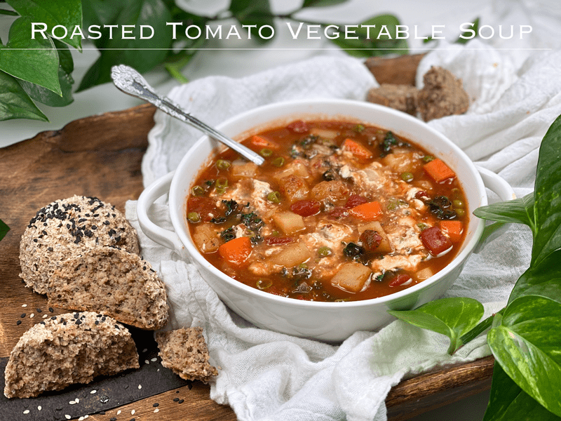
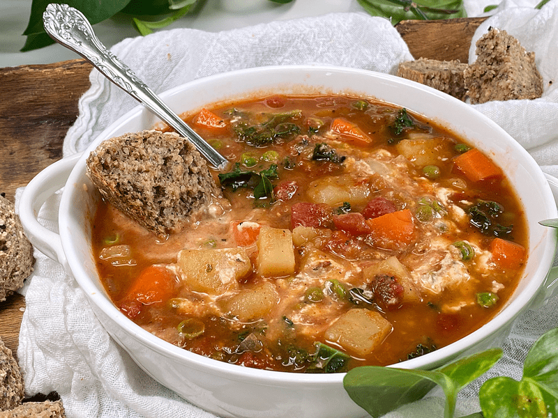
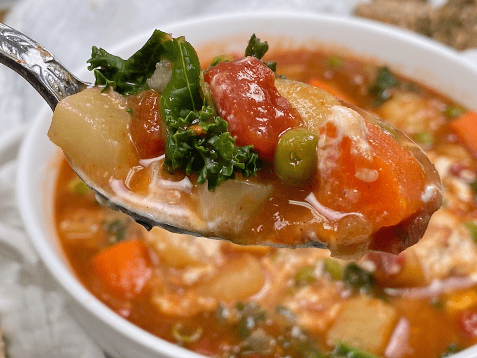

Roasted Tomato Vegetable Soup | Cooked | Vegan | Oil-Free
Today’s recipe is vegan, gluten-free, and oil-free. The soup kind of reminds me of what it would be like if vegetable soup and a chunky stew hooked up on a dating site for farmers. Regardless, it created a very filling and hearty soup that felt like it was flooding my body with satiation and nourishment… one spoonful at a time.

I realize that spring is just around the corner, but here in Oregon, we are still experiencing close to freezing weather at night. Therefore, a nice bowl of warm soup is just what those goosebumps that were rolling up and down my arms were calling for. I eat a LOT of salads, but sometimes, I just need something warm and grounding.
Tips and Techniques
- When dicing the potatoes and carrots, try to keep them uniform in size so they all cook evenly. Also, make sure they are a nice bite size so you can gather all the flavors in one spoonful.
- Don’t toss the kale stems; add them to your smoothies or dice them up and add them to the soup while the potatoes and carrots are cooking.
- Add the torn kale leaves and peas toward the end of the cooking so they don’t lose their color and texture.
- Know your paprika! They come in all ranges of heat, and if you aren’t keen on spicy hot foods, make sure you use the right kind of paprika.
- This recipe makes 10 cups of soup; depending on the size of your family that may seem like too much, just right, or not enough. For those who feel that it may be too much, I hear you and I have a solution for you. First off, this soup only gets better with each passing day (as most soup recipes do), so don’t be shy about eating it for a few days. That’s what we did, but I also froze some in pint-sized freezer-safe jars for future no-fuss meals.

Not ALL Paprika Is the Same
I have had paprika spice make or break a recipe. There were times when it seemed mild and other times it seemed HOT and spicy. What the heck?! I started to feel like paprika was the Russian roulette of spices. After experiencing more misses than hits with it, I stopped using it for a while. I wasn’t willing to risk the loss of another recipe. Thankfully, I didn’t let it beat me for too long. I had to understand this spice so I could enjoy it! So let’s start with what paprika is made from.
Paprika is made by grinding up bell peppers and/or chili peppers. It can be made exclusively of bell peppers, but it is often a combination of bell peppers and chilis. Aha! Okay, now I understand why some are hot, BUT how can I identify this when purchasing a bottle from the store? It boils down to three different types of paprika.
Regular Paprika – Mild flavor with a tinge of sweetness
- Basic paprika is what you will see in the grocery store, sitting in amongst the alphabetized rows of spices, the front of the bottle reads “Paprika.”
- This form is guaranteed to be mild. It is the least assertive in flavor, offering a low-intensity pepper flavor without much heat or sweetness.
Hungarian Paprika – Sweet flavor but has a range towards spicy
- The most common you’ll find in the United States is Hungarian Sweet Paprika, which has a mild pungency to it. You’ll also find Hungarian Hot Paprika, which can range to near cayenne pepper levels of heat, or four times hotter than a jalapeño.
- All Hungarian paprikas have some degree of rich, sweet red pepper flavor, but they range in pungency and heat.
Spanish Paprika – Smoked flavor
- Spanish paprika is commonly made with smoked peppers that have been dried and ground to a powder.
- It brings a deeper, smokier flavor to the dish. The heat and sweetness levels in Spanish paprika vary based on the blend of peppers used.

“Amie Sue, even with your word of caution regarding paprika, I thought my paprika was more on the mild side… but it turned out a bit spicy. What can I do to save it?” Oh, been there, done that, got the T-shirt, and spilled soup on it! Not to worry, there are a few things we can do to tone it down a notch or two.
- Vegan Raw Sour Cream – you can either stir it into the pot or add a dollop to the soup bowl, which is what I did for Bob. I didn’t mind the heat in the soup, but Bob found it a little too hot for him.
- A spoonful of lemon juice, vinegar, or ketchup. The acid can really do wonders to balance out and counteract the spiciness.
- Add a tablespoon of nut butter to the soup. Taste test and add more if needed. Sounds crazy, doesn’t it? The fats in the nut butter can help tame the heat.
I am going to wrap up this post so you can hop on over into the kitchen to check your fridge and pantry for ingredients. I hope you have a blessed and happy day, amie sue
 Ingredients
Ingredients
Yields 10 cups
- 6 cups vegetable broth
- 1 1/2 cups (240 g) diced onion
- 5 large cloves garlic, minced
- 2 tsp regular paprika
- 1 tsp ground coriander
- 1/2 tsp sea salt
- 1/4 tsp ground black pepper
- 1 (15 oz) can fire-roasted tomatoes, pureed
- 1 (15 oz) can fire-roasted tomatoes, as-is
- 5 cups gold potatoes, cut into bite-size chunks
- 2 cups diced carrots
- 1/2 cup sweet peas
- 3 large curly kale, stems removed, torn bite-size
Preparation
-
To a large stockpot, pour in 1/2 cup of the vegetable broth along with the diced onion, heating it over medium heat. Cook and stir occasionally until the onions are tender and translucent.
-
Add the garlic and cook another 1-2 minutes, being careful not to burn (otherwise it will taste bitter).
- If you don’t have fresh garlic, add 3/4 teaspoon of garlic powder
-
Add the paprika, coriander, salt, and pepper making sure to stir it consistently for about 15 seconds.
- Place ONE can of the fire-roasted tomatoes in the blender and process to a puree, then add to the stockpot.
-
Add the remaining 5 1/2 cups broth, the second can of diced roasted tomatoes, the potatoes and carrots. Bring to a rolling boil, cover, and lower the heat to low.
-
Simmer until the veggies are fork-tender, add the peas and torn kale. Heat through for a couple of minutes.
- I recommend adding the peas and kale toward the end of the cook time to prevent them from overcooking and turning mushy.
- Serve right away or better yet, enjoy it tomorrow when all the flavors have fully infused together! I added raw vegan sour cream on top and gently stirred it in… that is the white color you see in the photos.
Storage
When it comes to storing hot foods, we have a 2-hour window. You don’t want to put piping hot foods directly into the refrigerator. However, if you leave food out to cool and forget about it, you should, after 2 hours, throw it away to prevent the growth of bacteria. Large amounts should be divided into smaller portions and put in shallow, covered containers for quicker cooling in a refrigerator that is set to 40 degrees (F) or below.
- Fridge – In a sealed container, it will keep for up to 5-7 days.
- Freezer – You can also freeze the soup in individual or meal-sized portions for up to 3 months.
© AmieSue.com